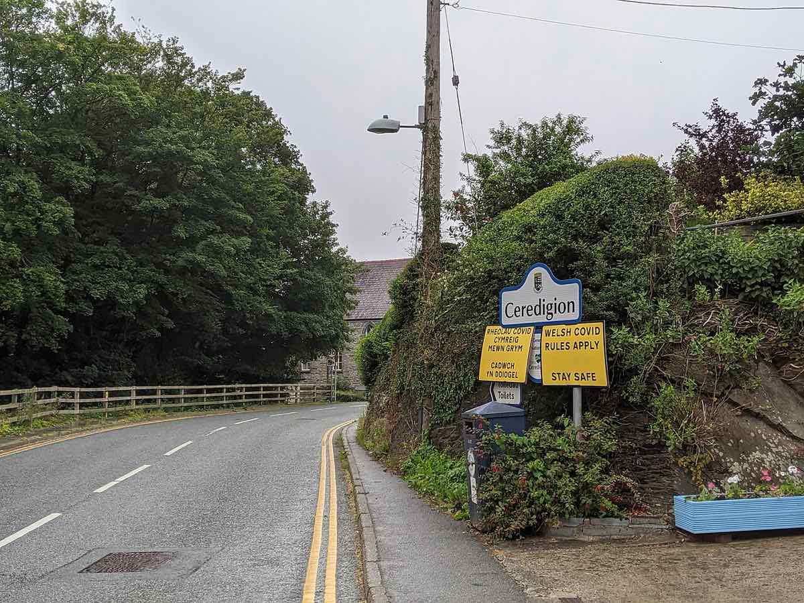

PNRR: Guvernul anunță finalizarea Cererii de plată nr. 5, de 2,84 miliarde de euro
Ministrul Dragoș Pîslaru a anunțat pe 14 august 2026 finalizarea Cererii de plată nr. 5 din PNRR, în valoare de 2,84 miliarde de euro (1,65 mld. granturi + 433 mil. împrumuturi), cu 75 de ținte și jaloane. Majoritatea surselor descriu cererea drept „finalizată, pregătită pentru depunere”, dar o singură sursă susține că ar fi fost deja încărcată oficial în sistemul european FENIX.
✅ Se probează
Afirmații susținute de surse verificabile.
Ministrul Investițiilor și Proiectelor Europene, Dragoș Pîslaru, a anunțat pe 14 august 2026 finalizarea Cererii de plată nr. 5 din PNRR, în valoare totală de 2,84 miliarde de euro — din care 1,65 miliarde de euro granturi nerambursabile și 433 de milioane de euro împrumuturi.
Cererea acoperă 75 de ținte și jaloane — 21 aferente reformelor și 54 investițiilor — și include, printre proiectele cu termen până la 31 august 2026, finalizarea a cinci spitale, a unor tronsoane din autostrada A7 și a unor lucrări de infrastructură feroviară.
Odată aprobată această tranșă, gradul de absorbție al componentei de granturi ar urma să urce de la 66% la 78% din alocarea totală de 13,57 miliarde de euro. Pîslaru a menționat că, la preluarea mandatului actualului guvern (iunie 2025), absorbția pe granturi era de 47,19%.
Aceasta este a treia revizuire negociată a PNRR, menită să reducă riscul unor penalizări financiare estimate, potrivit Guvernului, la sute de milioane sau chiar miliarde de euro, prin ajustarea unor indicatori și reformularea unor jaloane, astfel încât să reflecte mai fidel progresul real al proiectelor.
Termenul-limită pentru finalizarea tuturor jaloanelor din PNRR este 31 august 2026, iar ultima cerere de plată din întregul plan trebuie transmisă Comisiei Europene până la 30 septembrie 2026.
⚠️ Contestat / neclar
Puncte unde sursele diferă sau unde informația oficială este incompletă.
Sursele din 14 august 2026 nu coincid asupra stadiului exact al depunerii: BURSA, Digi24 și HotNews descriu cererea drept „finalizată” și „pregătită pentru depunere”, fără să confirme transmiterea ei efectivă la Comisia Europeană, în timp ce Realitatea.NET afirmă, într-un articol publicat în aceeași zi, că documentația a fost „deja depusă oficial” și „încărcată în sistemul european FENIX”.
Suma anunțată a crescut între estimările din primele zile ale lunii august (cca. 2,66 miliarde de euro brut, respectiv circa 2 miliarde de euro net) și cifra finală comunicată pe 14 august (2,84 miliarde de euro) — diferența reflectă, potrivit relatărilor, definitivarea calculelor pe parcursul finalizării dosarului, nu o sumă suplimentară distinctă.
La începutul lunii august, doar 33 din cele 75 de ținte și jaloane erau raportate ca fiind îndeplinite, restul de 42 fiind în lucru; niciuna dintre sursele din 14 august nu a actualizat public acest număr la data finalizării cererii, deci gradul real de îndeplinire la depunere rămâne neclar.
💬 Opinie, nu fapt
Interpretări, etichete și judecăți de valoare — separate explicit de fapte.
🤖 Nota AI
Am pus alături relatările BURSA, Digi24, HotNews, CursDeGuvernare și Realitatea.NET despre Cererea de plată nr. 5 din PNRR. Ce se probează, concordant: suma finală (2,84 mld. €), numărul de ținte și jaloane (75) și saltul de absorbție anunțat (66% → 78%). Ce rămâne neclar: dacă cererea a fost deja transmisă oficial Comisiei Europene sau este doar „finalizată” intern și pregătită pentru depunere — sursele din aceeași zi nu coincid. Am marcat separat, la opinie, previziunea ministrului că plata va fi „curată”, fiindcă depinde de o evaluare viitoare a Comisiei, nu de un fapt deja petrecut.
🧮 Cifrele se verifică între ele
66% din alocarea totală de 13,57 miliarde de euro pe granturi înseamnă aproximativ 8,96 miliarde de euro încasate până acum, iar 78% înseamnă circa 10,58 miliarde — o diferență de aproximativ 1,63 miliarde de euro. Suma este apropiată de cei 1,65 miliarde de euro în granturi incluși explicit în Cererea de plată nr. 5, ceea ce confirmă intern consecvența cifrelor anunțate de Guvern (mica diferență, de circa 20 de milioane de euro, se explică prin rotunjirile procentelor de absorbție).
Noi am turnat apa... concluzia e a ta.
Am pus alături ce se probează cu surse și ce rămâne contestat, neclar sau opinie. Verifică sursele, cântărește dovezile — tragi tu linia între fapt și interpretare.
← Înapoi la prima pagină